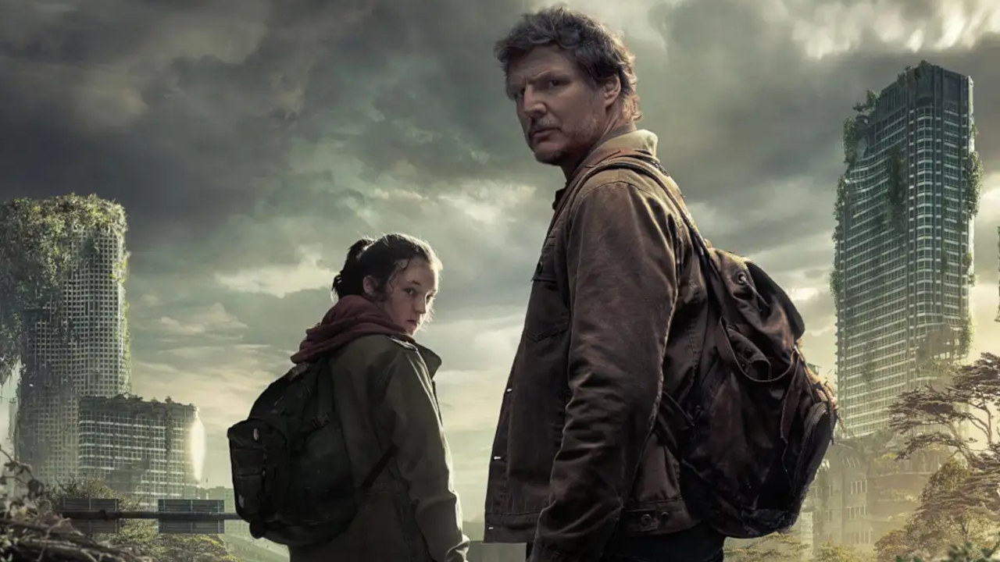

Recomendações de filmes
A Era Do Gelo


Vinte mil anos atrás, num mundo coberto de gelo, o mamute Manfred e a preguiça Sid resgatam um bebê humano órfão. Agora, os dois vão enfrentar muitas aventuras até devolver o filhote de gente à sua tribo, que migrou para um novo acampamento.
Sonic 2

O Filme é uma sequência dos acontecimentos do primeiro live-action de Sonic - O Filme, baseado no videogame de sucesso. Após conseguir se estabelecer em Green Hills, Sonic está pronto para mais liberdade e quer provar que tem o necessário para ser um herói de verdade.
Gato De Botas 2
O Gato de Botas descobre que sua paixão pela aventura cobrou seu preço: ele já gastou oito de suas nove vidas. Ele então parte em uma jornada épica para encontrar o mítico Último Desejo e restaurar suas nove vidas.
Recomendações de séries
O Mandaloriano

O Mandaloriano acompanha as desventuras de Din Djarin, um mercenário regido pelo código de honra dos Mandalorianos, pela galáxia durante o período Imperial. O seu companheiro de viagem é Grogu, conhecido pelos fãs como "Baby Yoda".
The Last Of Us

The Last Of Us é baseada no jogo de videogame de mesmo nome. A série dramática original da HBO se passa em um mundo pós-apocalíptico, vinte anos após a destruição da civilização moderna. Os personagens precisam enfrentar uma jornada brutal e dolorosa em busca da sobrevivência.
Recomendações de animes
One Piece
A série foca em Monkey D. Luffy, um jovem feito de borracha, que, inspirado em seu ídolo de infância, o poderoso pirata Shanks, o Ruivo, parte em uma jornada do mar do East Blue para encontrar o tesouro mítico, o One Piece, e proclamar-se o Rei dos Piratas.
Demon slayer
Em Demon Slayer, Tanjiro, um bondoso jovem que ganha a vida vendendo carvão descobre que sua família foi morta por um demônio. E, para piorar, Nezuko, sua irmã mais nova e única sobrevivente, também acabou transformada em um demônio.
Dragon ball super

Dragon Ball Super segue as aventuras do protagonista Goku e seus amigos, depois de derrotar Majin Boo e trazer paz para Terra mais uma vez. Goku encontra seres de longe mais poderosos e atinge o poder de um deus.